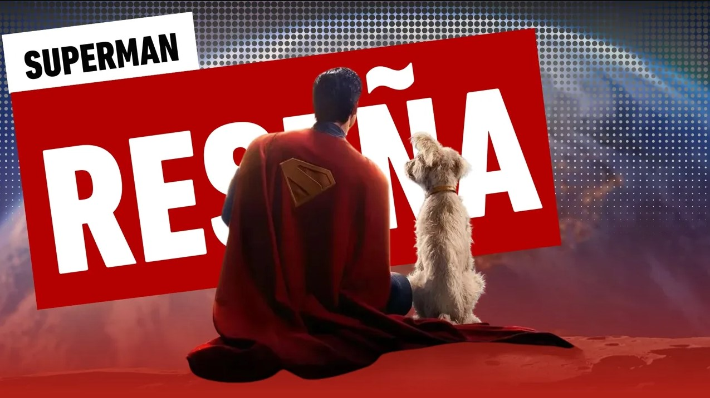

Superman (2025) - Reseña
Cada nuevo Superman en el cine o la televisión ha marcado una importante era para las generaciones. Si bien cada uno de ellos ha gozado de una popularidad diferente, el público sabe con exactitud quién es su versión favorita del personaje.
Originalmente titulada como 'Superman Legacy', la producción de James Gunn buscaba retratar la bondad del personaje que por muchos años se perdió de acuerdo un sector de fans. En una era donde la violencia y la corrupción están desmedidas, era tiempo de volver a traer al personaje que se ganó el corazón de toda una generación de lectores de cómics, sólo que en esta ocasión, habría que llevarlo a la pantalla grande. ¿Superman logra realizar este acontecimiento? James Gunn entrega una película redonda con una historia simple, pero a la vez, llena de capas lo suficientemente poderosas para desarrollar a una gran cantidad de personajes.
En cuestión de actuaciones todos se llevan grandes aplausos, sobre todo el trío principal. Tanto Rachel Brosnahan como Lois Lane, la cual es intrepida y curiosa, así como Nicholas Hoult como Lex Luthor, quien es frío, despiadado y calculador. Pero quien se lleva todo el peso actoral es David Corenswet como Superman, quien destaca en todo momento como el hombre que inspira, pelea y sigue hacia adelante.